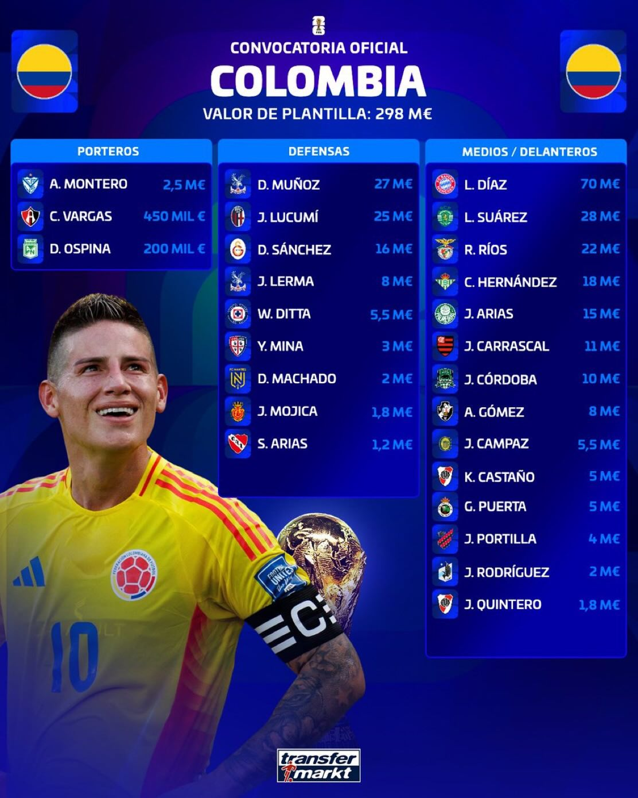
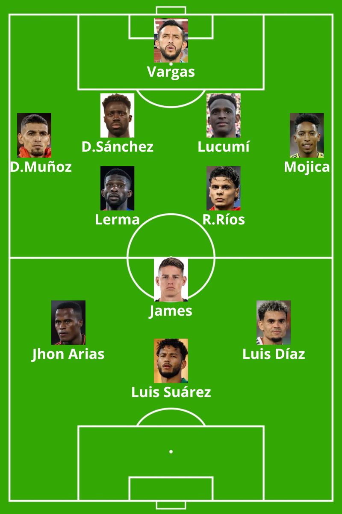

Estructura: 1-4-2-3-1

Colombia es una selección con un gran potencial para explotar las transiciones ofensivas. En fase defensiva se organizará habitualmente en un 1-4-4-2, replegándose para posteriormente desplegarse con rapidez mediante transiciones lideradas por James Rodríguez o Juan Fernando Quintero como principales lanzadores, buscando conectar con su gran referencia ofensiva, Luis Díaz, uno de los jugadores más determinantes del panorama internacional.
La mayoría de los ataques probablemente se inicien por el sector derecho, aunque la finalización de las acciones tenderá a producirse por la banda izquierda, donde Luis Díaz resulta especialmente diferencia Luis Suárez también tendrá un papel mportante en estas transiciones, aportando profundidad, movilidad y capacidad para liderar ofensivamente a la selección en determinados contextos de partido.
Luis Suárez también tendrá un papel importante en estas transiciones, aportando profundidad, movilidad y capacidad para liderar ofensivamente a la selección en determinados contextos de partido.
Por su parte, Daniel Muñoz será una pieza clave en ataque gracias a la profundidad y amplitud que ofrece por el carril derecho. Su capacidad para recorrer grandes distancias, su desplazamiento en largo y medio alcance, así como la calidad de sus centros, le convierten en un recurso ofensivo de gran valor.
James Rodríguez, Juan Fernando Quintero y Jorge Carrascal dispondrán de cierta libertad para actuar entre líneas, ocupando posiciones de mediapunta o trequartista. Su talento para identificar y explotar espacios en ataques posicionales les permitirá generar ventajas y aumentar la capacidad creativa del equipo.
Además, Colombia será una selección muy peligrosa en las acciones a balón parado, gracias al poderío aéreo y la capacidad rematadora de jugadores como Yerry Mina, Davinson Sánchez, Jhon Lucumí, Richard Ríos o Jefferson Lerma.
Aunque partirá en un segundo plano respecto a algunas de las grandes favoritas, Colombia cuenta con argumentos suficientes para castigar cualquier error del rival y competir al máximo nivel. Su capacidad para aprovechar los descuidos y su fortaleza en contextos de eliminatoria a partido único la convierten en una selección capaz de eliminar a cualquier oponente.